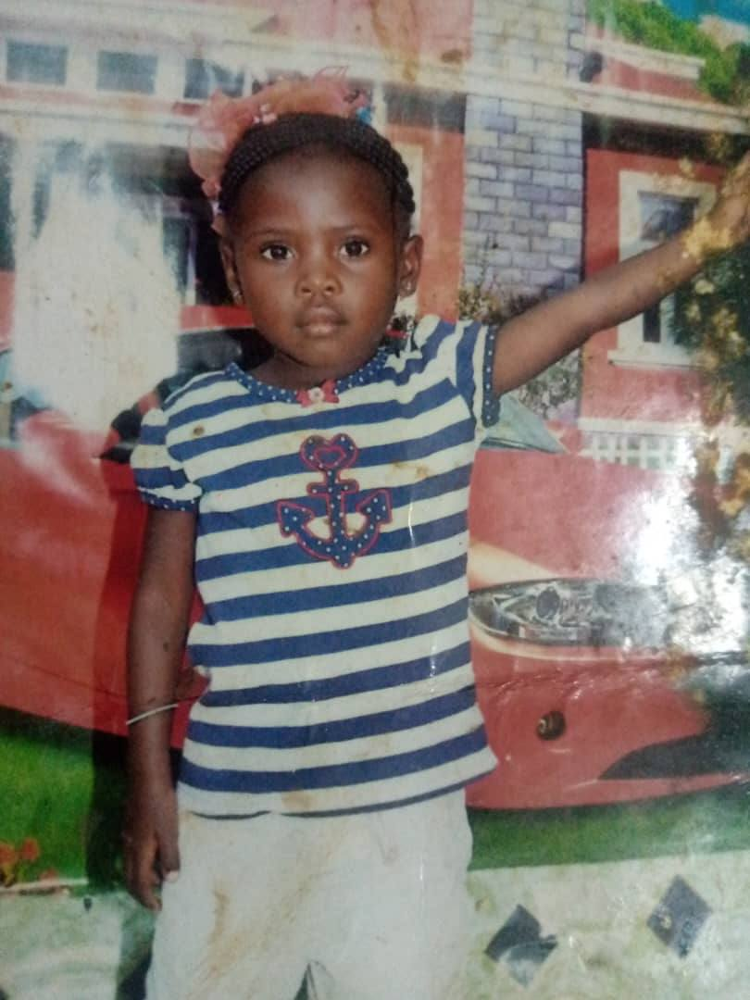

PARFAITE.B.K
INGÉNIORAT CIVIL EN DEVENIR
Mon Évolution
(Cliquez pour lire)
01. La Maîtrise Technique
02. L'Aspiration au Génie Civil

03. Les Racines
04. La Force de l'Héritage
×
Tableau de
Bord (16 Modules)
N°
Module
Détails
Statut